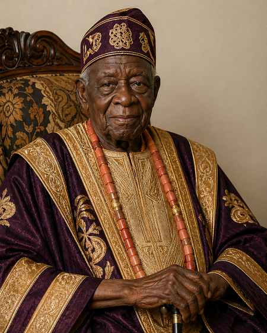

Engr Abidemi Cole is a highly accomplished mechanical engineer with over five decades of professional experience. He represents a rare blend of technical mastery, academic excellence, and enduring commitment to engineering advancement. He had his undergraduate training at University of Oxford and postgraduate training at University of Cambridge; with more than 55 years in active practice, his career spans multiple sectors, including manufacturing, energy, infrastructure, and industrial systems design. His work has consistently reflected precision, innovation, and a deep understanding of both traditional and modern engineering methodologies.
He holds several academic certifications from reputable institutions, covering core mechanical engineering disciplines as well as specialized areas such as thermodynamics, fluid mechanics, and industrial automation. In addition to his foundational degrees, he has pursued continuous professional development through advanced certifications, executive training programs, and international workshops. This strong academic background has enabled him to stay relevant in a rapidly evolving field while mentoring younger engineers and contributing to knowledge transfer across generations.

Born in Egypt, raised in Nigeria, Engr Ibrahim Khalid Ahmed is an accomplished civil engineer who has built a career defined by precision, resilience, and a deep commitment to infrastructure development. His early fascination with how cities are shaped led him to pursue civil engineering at the prestigious University of Cambridge in the United Kingdom, where he received rigorous technical training and was exposed to global engineering standards. This international education not only broadened his technical expertise but also shaped his professional outlook, blending analytical discipline with innovative problem-solving.
With over 45 years of professional experience, he has contributed to a wide range of projects spanning transportation systems, structural design, water resources, and urban development. His work reflects a balance between modern engineering practices and a strong understanding of local environmental and cultural contexts. Throughout his career, he has played key roles in the planning and execution of large-scale infrastructure projects, consistently delivering solutions that are both efficient and sustainable.